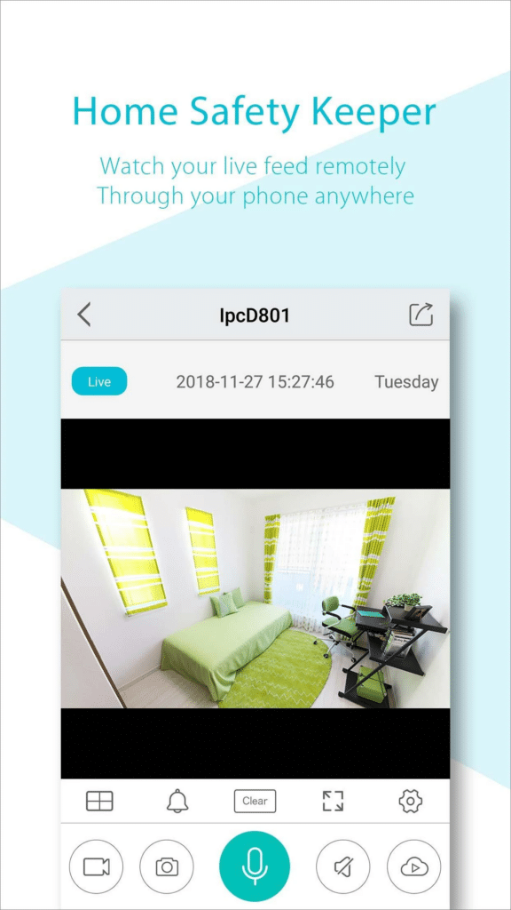

用 AView 连相机踩过的五个坑——从反复配网到画面全灰
AView 配捷高相机看似简单，实际在 WiFi 频段、离线排查、账号切换、多相机分组和同屏体验上各有容易忽略的细节。本文把我踩过的坑一个个拆解，帮你少走几小时弯路。
AView 是捷高 IPC 相机的配套 App，它的官网上能拿到安装包，装完就能扫码把家里或店里的相机绑上去，实时画面、回放、告警推送一条龙。听起来挺顺对吧？我第一次用的时候也是这么想的——结果从配网到多相机管理花了整整一个晚上才把所有坑踩明白。下面按我遇到的顺序把这些坑记下来，提前知道的话真的能省不少时间。
坑一：双频合一的路由器死活配不上网
症状：相机扫码配网时一直转，提示"连接失败"，我以为密码输错了，反复输了七八遍还是不行，手机明明就在相机旁边，信号满格。
原因：捷高的 WiFi 款相机只支持 2.4GHz 频段，这是硬件设计限制，App 层面突破不了。而现在大部分路由器默认把 2.4G 和 5G 合并成一个 SSID（叫"双频合一"或"智能连接"），手机在路由器旁边优先连 5G，扫码配网时 App 就把 5G 的 SSID 和密码传给了相机——相机搜不到 5G，自然配不上。我当时不知道这个细节，在那儿硬怼了半小时。
解法：登录路由器管理页面（一般是 192.168.1.1 或 192.168.0.1），找到 WiFi 设置页，关闭"双频合一"，把 2.4G 和 5G 改成不同的名字，比如 Home24 和 Home5G。AView 配网时选 2.4G 那个 SSID 就行。少数标注了"5G WiFi"的新型号例外，但大多数在售机型还是只有 2.4G。

坑二：相机突然变灰显示离线，以为要送修
症状：早晨起来一看，AView 里所有相机卡片都灰了，点进去提示"无法连接"。第一反应是相机坏了或者被人拔了电源，下楼检查发现电源好好的，指示灯也亮着。
原因：相机离线本质上就是手机 App 连不上相机的视频流，背后可能有好几种情况：电源适配器坏了但指示灯还亮着、路由器改了密码没通知相机、路由器开了 AP 隔离把手机和相机互相屏蔽了、相机本身卡死需要重启。我那次查了一圈最后发现是路由器开了 AP 隔离——之前为了防蹭网随手开的，没想到把自家设备也隔离了。
解法：按这个顺序排查最省时间：先看电源（指示灯完全不亮就换插座或换同规格电源适配器）→ 再看 WiFi 信号强度（同一路由器下手机搜一下，-60dBm 以上才够稳，隔着承重墙或金属柜会严重衰减）→ 检查路由器有没有改密码或开了 AP 隔离（有的话关掉或给相机重新配网）→ 退出 AView 杀后台重新登录 → 最后长按相机复位按钮重启。90% 的情况重启就能解决，真不行再去查固件有没有新版本——或者去aview下载拿最新安装包覆盖重装。
坑三：换了账号登录，相机列表全没了
症状：用另一个手机号注册了 AView 账号想试试新功能，退出原账号登录新号后，"我的相机"卡片一张都不剩，差点以为相机被解绑了。
原因：AView 不同注册渠道的账号是完全独立的——邮箱号、手机号、微信登录各是各的，互相看不到。相机绑定在哪个账号下，就只能用那个账号看。我原先是用邮箱注册的，换手机号登录自然什么都没有。还有一种情况是服务器图标不匹配，点一下图标会自动重登，也算常见。
解法：先回忆最初是用什么方式注册的，换回原账号就行。建议主力账号固定用一种注册方式，记在什么地方别忘。多相机的话一定要给每台相机按位置命名，比如"门口""收银台""后院""婴儿房"——全叫 camera-1、camera-2，告警通知来了完全分不清哪一台触发的。AView 主页右上角菜单可以建分组，把相机拖进去，十台以上相机时分组过滤能省很多事。

坑四：多通道同屏画面卡顿花屏
症状：收银台、门口、仓库三个相机开 4 分同屏，画面每隔几秒就卡一下，有时还会花屏变成马赛克。想放大某个画面操作 PTZ，发现同屏模式下根本点不动。
原因：4 路以上同屏对手机 CPU 和带宽要求挺高的，老一点的手机扛不住。而且同屏时每路画面画质会自动降到流畅档来保证整体流畅度，这个是 App 的策略，改不了。另外同屏模式下单个画面的 PTZ 控制被锁了，必须先放大到单画面才能操作——这个我一开始以为是 bug，其实是设计如此。
解法：同屏画面数别贪多，3 路以内一般手机都能扛，4 路以上建议用性能好一点的手机。需要操作云台的时候先点目标画面放大到单画面，操作完再切回同屏。分组管理里可以给不同场景预设同屏布局，比如店铺夜班巡逻时一键切到"收银台+门口+仓库"三联屏，比一个个点快多了。这些分组和布局的详细配置步骤，在aview文档里写得比较全。
坑五：告警轰炸时找不到是哪台相机触发的
症状：某天下午连续收到七八条移动侦测告警通知，但点开 AView 后相机卡片太多，来回翻了一圈才找到触发告警的那台，画面里人早就走没影了。
原因：没做分组也没命名。十台以上相机堆在主页，告警通知只说"有移动侦测"，不说哪台。之前嫌麻烦没分组，结果关键时刻找不到。
解法：AView 主页长按相机卡片可以手动拖动排序，把最常看的排在最前面，App 会记住这个顺序。告警设置里可以按分组配置通知策略——比如门口和仓库的相机常开告警，收银台在营业时间关掉。这样既能防漏告警，又不会被无关通知轰炸。
防坑清单
- 配网前务必确认路由器已关闭双频合一，2.4G 和 5G 用不同的 SSID
- 相机离线先重启再查别的，90% 的情况复位就能搞定
- 账号固定一种注册方式，别邮箱、手机号、微信混着用
- 给每台相机按位置命名，建分组，别全叫 camera-N
- 同屏画面数控制在 3 路以内，需要 PTZ 操作时先放大单画面
知道这些坑之后，AView 其实相当省心——配好一次基本就不用再折腾了。我现在十几台相机分组命名、告警策略都配好，日常就是偶尔看一眼实时画面，从来没出过之前那种折腾一晚上的事。
顺便说一下，这些排查和配置内容我也同步到了几个常用的代码仓库里。考虑到国内访问速度，除了GitHub，我也在Gitee和GitCode各放了一份镜像，不同网络环境下都能方便查阅。